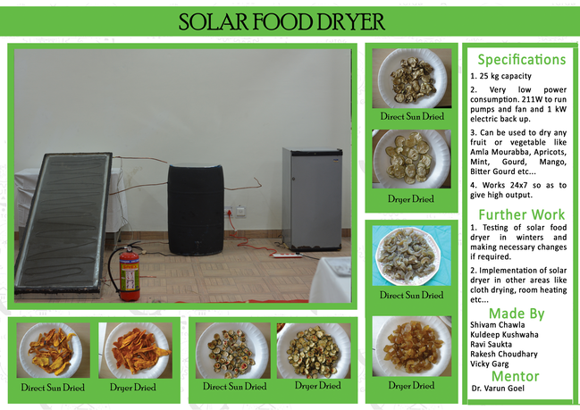

04 2015
Solar Food Dryer

Himachal Pradesh is very famous for its Apricots and Apples. Dried Apricots and Apples make a great product for the market and are in great demand as healthy snacks by health conscious people and others as well for their great taste.
Apricot dehydration is a very costly process as it consumes a lot of energy for drying. Small scale Industrialists use electric dryer of 12.5 kW for each 250 kg drying while Cottage workers use direct sun drying for producing candies. But there are problems with each drying technique. The electric dryers consume a lot of energy of dehydration of each batch while direct sun drying causes discoloration of the Apricots and Apples and also result in loss of various nutrients.
So as per their needs we designed and fabricated a solar food dryer for them which can meet the requirements of both industries and cottage workers. It is a small endeavor to help them. It uses a small electric power for the pump and air blower which have very small power requirement of 211W and it can be easily supplied with an inverter in case of power cuts. Moreover it is not open to atmosphere and direct radiations as food products are kept inside the drying chamber thus no question of contamination or any other quality loss. Thus our solar dryer is able to serve the purpose of both industrialists as well as local people successfully.
It has facility for the storage of heat for 18 hours so it can work 24X7. Also, it has an electric backup of 1 kW heater for every 25 kg capacity so that it may work even in cloudy and rainy days. It has automatic temperature controller and automatic electric switching system.
The pay back period of the dehydrator is only 1.5 years so it economically viable as well.
Back to News